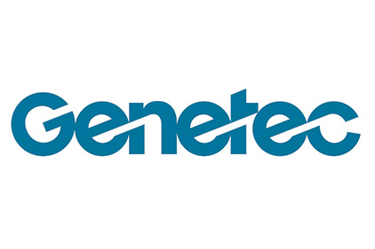

-
Genetec (September 2019 - December 2019)
Computer Vision and Machine Learning Intern - KiwiSecurity
- Optimization of a people tracker in Python
- Researched and applied image processing techniques, metalearning, computer vision algorithms and new machine learning frameworks within proof of concept. Use of Pytorch, Keras, Mxnet, SSD for object detection
-
Caisse de dépôt et placement Québec (September 2018 - December 2018)
Software Developer Intern - Private Equity Team
- Development ASP.NET C# Applications and Java Applications
- Setup Azure DevOps Test Pipeline
-
Genetec (Semptember 2019 - December 2019)
Computer Vision and Machine Learning Intern - KiwiSecurity
-
Optimization of a people tracker in Python
-
Optimization of a people tracker in Python
-
 Caisse de Depot et Placement Quebec (September 2018 - December 2018)
Caisse de Depot et Placement Quebec (September 2018 - December 2018)Software Developer Intern - Private Equity Team
- Development ASP.NET C# Applications and Java Applications
- Setup Azure DevOps Test Pipeline